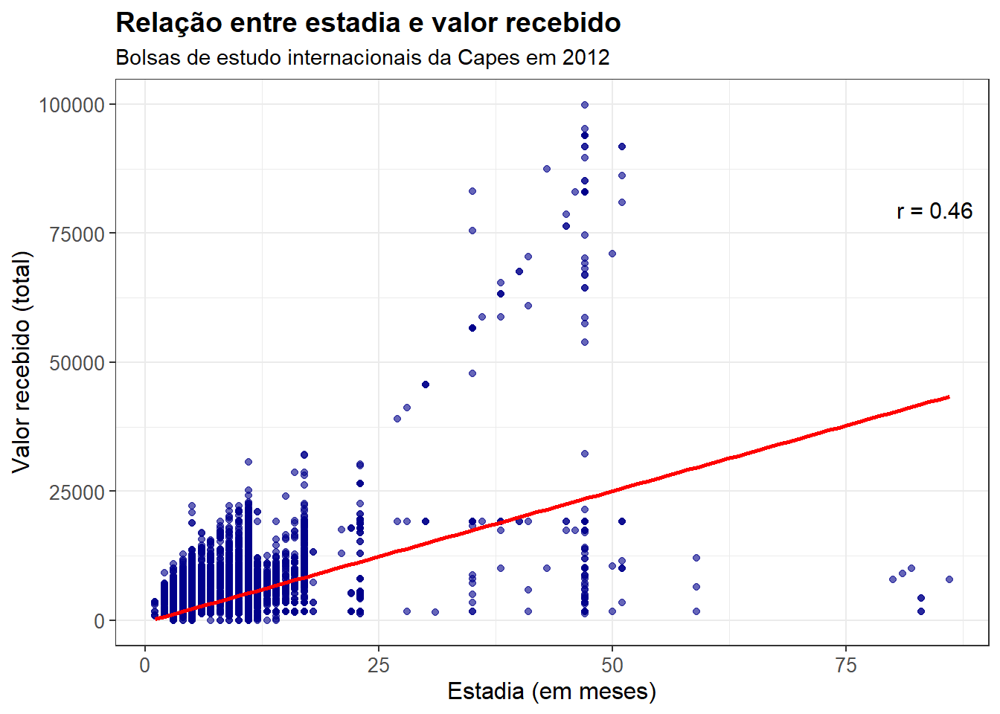
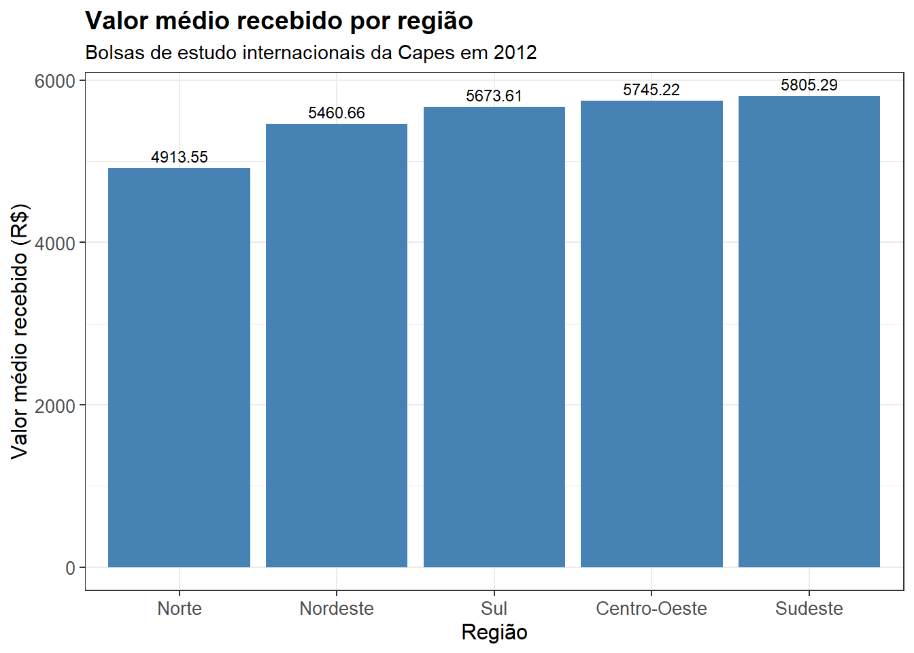
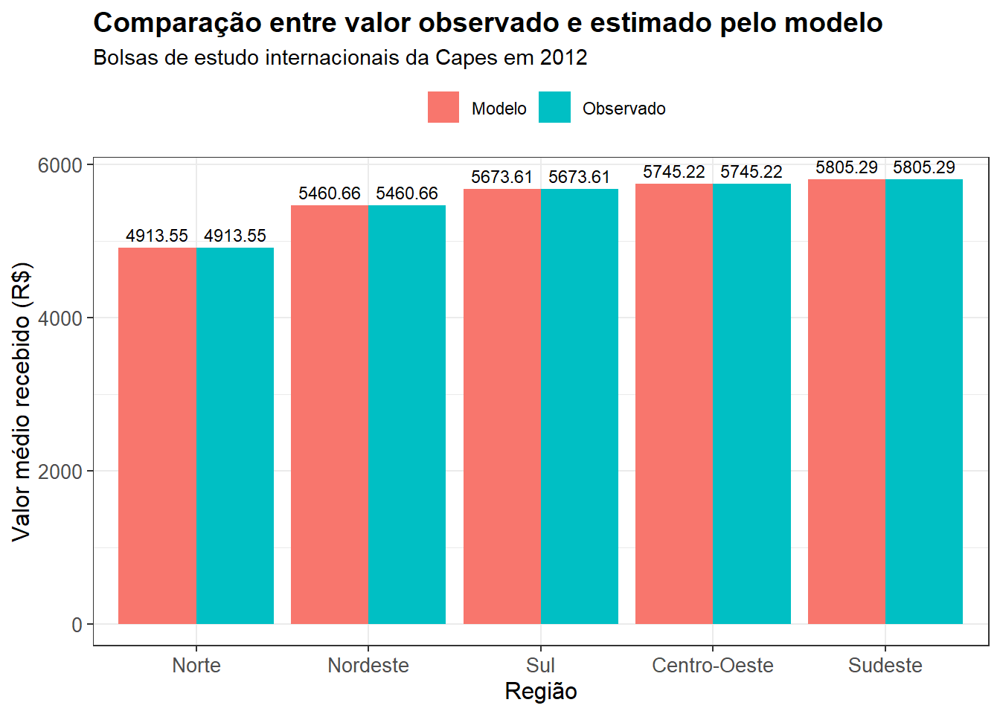
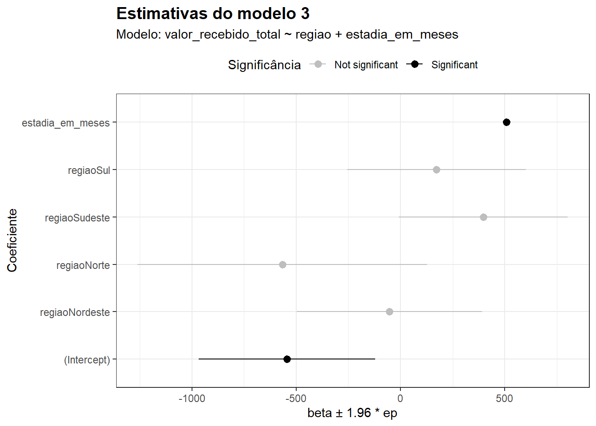

# importacao dos pacotes
library(tidyverse)
library(gtsummary)
library(modelsummary)
# leitura dos dados
df <- readxl::read_excel("bolsas_internacionais_capes_2012.xlsx")17 Lista IV
Regressão linear
Abstract
Nesta lista, trabalho especificamente com regressões lineares utilizando os dados de bolsas internacionais financiadas pela Capes no ano de 2012. Estimo, primeiro, dois modelos lineares simples, com apenas uma covariável – uma contínua, no primeiro caso, e uma categórica, no segundo caso. Observou-se, em particular, que a melhor estimativa no caso categórico corresponde exatamente à média de cada nível da covariável. Depois, estimo um modelo com as duas covaríáveis e apresento as estimativas graficamente.
17.1 Introdução
Nesta lista, o objetivo será analisar dados de bolsas de estudo da Capes usando modelos de regressão linear. Para tanto, usarei uma base de dados com informações de bolsistas que receberam auxílio da Capes para estudar fora do país em 2012.
O arquivo bolsas_internacionais_capes_2012.xslx contém uma base de dados com informações de mais de 18 mil bolsistas. Na base, cada linha indica uma bolsa e informações a ela referentes como duração da bolsa em meses (estadia_em_meses), a instituição de origem da pessoa beneficiada (instituicao_ensino_origem), a região onde fica essa instituição (regiao), além do valor recebido da Capes (valor_recebido_total).
17.2 Regressão linear simples
Na primeira parte da tarefa, vamos ajustar um modelo linear simples que estime a reta que melhor representa a relação entre as variáveis valor_recebido_total e estadia_em_meses, sendo a primeira a variável dependente e a segunda a variável independente.
Em particular, vamos fazer isso de maneira integrada ao pacote ggplot, que nos permite incluir a reta de regressão junto à plotagem do gráfico. Além disso, o gráfico mostra também o coeficiente de correlação de Pearson entre as duas variáveis.
correlacao <- cor(df$estadia_em_meses, df$valor_recebido_total)
df %>%
ggplot(aes(x = estadia_em_meses, y = valor_recebido_total)) +
geom_point(color = "darkblue", alpha = 0.6) +
geom_smooth(method = "lm", se = FALSE, color = "red", linewidth = 1) +
labs(
title = "Relação entre estadia e valor recebido",
subtitle = "Bolsas de estudo internacionais da Capes em 2012",
x = "Estadia (em meses)",
y = "Valor recebido (total)"
) +
annotate(
"text",
x = Inf, y = -Inf,
label = paste0("r = ", round(correlacao, 2)),
hjust = 1.2, vjust = -25,
size = 4, color = "black"
) +
theme_bw() +
theme(
plot.title = element_text(size = 14, face = "bold"),
axis.title = element_text(size = 12),
axis.text = element_text(size = 10)
)
A análise visual da distribuição das variáveis já indica uma relação positiva entre as duas variáveis: quanto maior o tempo de estadia, maior é o valor da bolsa recebido. A reta de regressão confirma isso – afinal, observamos um \(\beta\) positivo; ao mesmo tempo, observamos o coeficiente de correlação de \(0.46\).
Note, além disso, que há alguns outliers. Destacam-se especialmente as observações em que o tempo de estadia é maior do que \(75\) meses e o valor total da bolsa foi menor do que \(25.000\).
Agora, passemos a uma observação mais detalhada do modelo ajustado:
m1 <- lm(data = df, formula = valor_recebido_total ~ estadia_em_meses)
tbl_regression(m1, intercept = TRUE, conf.int = TRUE)| Characteristic | Beta | 95% CI | p-value |
|---|---|---|---|
| (Intercept) | -314 | -505, -123 | 0.001 |
| estadia_em_meses | 508 | 494, 522 | <0.001 |
| Abbreviation: CI = Confidence Interval | |||
Todos os coeficientes são estatisticamente significativos ao nível \(0.05\); em particular, o efeito da variável independente é estatisticamente significativo ao nível \(0.001\). Do ponto de vista de interpretação, não é lógico interpretar o intercepto neste caso: como esse coeficiente representa o valor da variável dependente quando todos os preditores são zero, e, neste caso, não há indivíduos com estadia_em_meses \(\leq 0\), não há interpretação razoável.
Quanto ao \(\beta\), isto é, o efeito da covariável, interpreta-se o seguinte: a cada uma unidade de aumento da estadia_em_meses, aumentamos, em média, \(508\) no valor_recebido_total. O intervalo de confiança de 95% para a estimativa desse coeficiente é estreito, o que significa que temos alta confiança nessa estimativa. Temos um erro padrão de \(\approx 7\), o que nos leva a um intervalo de confiança de \(508 \pm 1.96 \times 7 = 508 \pm 14\).
17.3 Variáveis independentes categóricas
Na segunda parte da tarefa, vamos ajustar um modelo linear simples incluindo apenas uma variável categórica como variável independente. Aqui, o objetivo é notar que a modelagem obtida resulta justamente nas médias de cada nível da variável categórica. O princípio matemático para isso é descrito abaixo.
Temos uma variável regiao com \(K\) categorias, sendo \(K = 5\) neste caso em particular. Para cada observação \(i\) na categoria \(k\), temos um modelo simples dado por:
\[
Y_i = \mu_k + \epsilon_i,
\] onde \(Y_i\) é o valor_recebido_total do indivíduo \(i\), resultante de uma média desconhecida \(\mu_k\) somada a algum erro aleatório. Para cada grupo, utilizamos o método dos Mínimos Quadrados Ordinários para estimar o \(\mu_k\) que minimiza o erro quadrático médio:
\[ S(\mu_i + \cdots + \mu_k) = \sum^K_{k = 1} \sum_{i \in k} (Y_i - \mu_k)^2. \]
O MQO nos permite obter forma fechada para \(\mu_k\) tomando a derivada da função acima em relação a \(\mu_k\) e igualando-a a 0. Fazendo isso, obtemos:
\[ \begin{aligned} \dfrac{ \partial S }{ \partial \mu_k } = - 2 \sum_{i \in k} (Y_i - \mu_k) = 0 &\Rightarrow \sum_{i \in k} Y_i - \sum_{i \in k} \mu_k = 0 \\ &\Rightarrow n_k \cdot \mu_k = \sum_{i \in k} Y_i \\ &\Rightarrow \mu_k = \dfrac{1}{n_k} \sum_{i \in k} Y_i \end{aligned} \]
De fato, a melhor estimativa para \(\mu_k\) – isto é, aquela que minimiza o erro quadrático médio, nesse caso, é a média das observações na categoria \(k\). Então, ajustado o modelo, é exatamente isso que obteremos.
Primeiro, vamos mostrar graficamente as médias de cada grupo, sem qualquer ajuste de modelo.
df %>%
group_by(regiao) %>%
summarise(valor_total_medio = mean(valor_recebido_total)) %>%
ggplot(aes(x = reorder(regiao, valor_total_medio), y = valor_total_medio)) +
geom_col(fill = "steelblue") +
geom_text(aes(label = round(valor_total_medio, 2)),
vjust = -0.5, size = 3) +
labs(
title = "Valor médio recebido por região",
subtitle = "Bolsas de estudo internacionais da Capes em 2012",
x = "Região",
y = "Valor médio recebido (R$)"
) +
theme_bw() +
theme(
plot.title = element_text(size = 14, face = "bold"),
axis.title = element_text(size = 12),
axis.text = element_text(size = 10)
)
Agora, vamos ajustar um modelo mantendo a regiao como a única variável independente.
m2 <- lm(data = df, formula = valor_recebido_total ~ regiao)
tbl_regression(m2, intercept = TRUE, conf.int = TRUE)| Characteristic | Beta | 95% CI | p-value |
|---|---|---|---|
| (Intercept) | 5,745 | 5,312, 6,179 | <0.001 |
| regiao | |||
| Centro-Oeste | — | — | |
| Nordeste | -285 | -786, 217 | 0.3 |
| Norte | -832 | -1,614, -49 | 0.037 |
| Sudeste | 60 | -396, 516 | 0.8 |
| Sul | -72 | -555, 412 | 0.8 |
| Abbreviation: CI = Confidence Interval | |||
Nesse caso, o intercepto representa a média da regiao Centro-Oeste, que é a categoria de referência, e as demais estimativas devem ser somadas ou subtraídas desse intercepto para obter as médias de cada região. O código abaixo faz isso e apresenta os resultados graficamente, comparando o que foi obtido pelo modelo e as médias tomadas diretamente.
# acessa os coeficientes
coeficientes <- m2$coefficients
# manipula os coeficientes para renomear e somar o que for necessario
tibble_coef <- tibble(
regiao = names(coeficientes),
estimativa = as.numeric(coeficientes)
) %>%
mutate(
regiao = gsub("regiao", "", regiao),
regiao = ifelse(regiao == "(Intercept)", "Centro-Oeste", regiao),
estimativa = ifelse(regiao == "Centro-Oeste",
estimativa,
estimativa + coeficientes["(Intercept)"]),
tipo = "Modelo"
)
# obtem uma tabela de medias observadas
tibble_observado <- df %>%
group_by(regiao) %>%
summarise(estimativa = mean(valor_recebido_total, na.rm = TRUE)) %>%
mutate(tipo = "Observado")
# junta as duas tabelas
dados_plot <- bind_rows(tibble_coef, tibble_observado)
# apresenta graficamente
ggplot(dados_plot, aes(x = reorder(regiao, estimativa), y = estimativa, fill = tipo)) +
geom_col(position = "dodge") +
geom_text(aes(label = round(estimativa, 2)),
position = position_dodge(width = 0.9),
vjust = -0.5, size = 3) +
labs(
title = "Comparação entre valor observado e estimado pelo modelo",
subtitle = "Bolsas de estudo internacionais da Capes em 2012",
x = "Região",
y = "Valor médio recebido (R$)",
fill = ""
) +
theme_bw() +
theme(
plot.title = element_text(size = 14, face = "bold"),
axis.title = element_text(size = 12),
axis.text = element_text(size = 10),
legend.position = "top"
)
De fato, verificamos o que descrevemos matematicamente no início desse segundo exercício: quando o modelo inclui um único preditor, e esse preditor é categórico, a melhor estimativa possível – isto é, aquela que minimiza o erro quadrático médio – é simplesmente a média de cada grupo. Portanto, obtemos valores precisamente idênticos, pelo menos até a segunda casa decimal.
17.4 Relação multivariada
Agora, vamos incluir ambas as variáveis independentes (regiao e estadia_em_meses) em um mesmo modelo.
# ajusta o modelo
m3 <- lm(data = df, formula = valor_recebido_total ~ regiao + estadia_em_meses)
tbl_regression(m3, intercept = TRUE, conf.int = TRUE)| Characteristic | Beta | 95% CI | p-value |
|---|---|---|---|
| (Intercept) | -544 | -967, -122 | 0.012 |
| regiao | |||
| Centro-Oeste | — | — | |
| Nordeste | -54 | -498, 391 | 0.8 |
| Norte | -566 | -1,261, 128 | 0.11 |
| Sudeste | 397 | -8.0, 802 | 0.055 |
| Sul | 173 | -256, 602 | 0.4 |
| estadia_em_meses | 509 | 494, 523 | <0.001 |
| Abbreviation: CI = Confidence Interval | |||
Antes de interpretar os resultados, vamos utilizar a função modelplot (do pacote modelsummary) para mostrar a estimativa do efeito das duas variáveis simultaneamente. Além disso, utilizamos algumas propriedades de estilização do pacote para indicar quais estimativas são estatisticamente significativas ao nível \(0.05\)1:
p <- modelplot(m3, conf_level = 0.95)
p$data <- p$data %>%
mutate(significance = ifelse(p.value < 0.05, "Significant", "Not significant"))
p +
aes(color = significance) +
scale_color_manual(values = c("Not significant" = "grey", "Significant" = "black")) +
labs(
title = "Estimativas do modelo 3",
subtitle = "Modelo: valor_recebido_total ~ regiao + estadia_em_meses",
x = "beta ± 1.96 * ep",
y = "Coeficiente",
color = "Significância"
) +
theme_bw() +
theme(
plot.title = element_text(size = 14, face = "bold"),
axis.title = element_text(size = 11),
legend.position = "top"
)
Na ocasião do modelo 2, havíamos observado que a estimativa para a região Norte era estatisticamente significativa ao nível \(0.05\) – isto é, ela era considerada estatisticamente distinta da região de referência (naquele caso, o Centro-Oeste). No entanto, quando controlamos para a estadia_em_meses, o que se observa é que a região não parece surtir efeito significativo sobre o valor_total_recebido; em particular, as estimativas não são estatisticamente diferentes da categoria de referência. O efeito da estadia continua significativo, e o tamanho do efeito é semelhante ao que se observou no modelo que incluia apenas essa covariável como variável independente.
Cabe notar que o valor de \(t\), embora não tenha sido diretamente analisado, serve para obter o \(p\)-valor. O valor \(t\) é uma quantidade calculada para testar a hipótese de que o \(\beta\) estimado é, nesse caso, diferente de 0 – isto é, a hipótese nula de que não há efeito associado à covariável. Nesse caso, \(t = \dfrac{\hat{\beta}}{\text{se}(\hat{\beta})}\). Daí, basta observar onde esse valor se encontra na distribuição \(t\) de Student e, quanto mais próximo das caudas – isto é, quanto menor a massa de probabilidade associada –, menor será o valor \(p\).↩︎